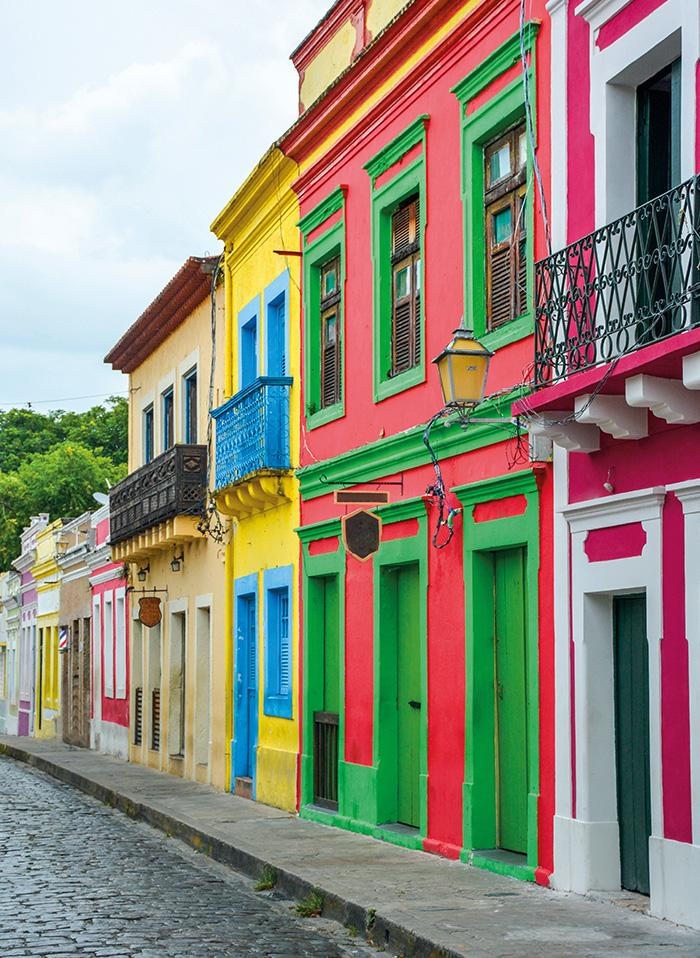
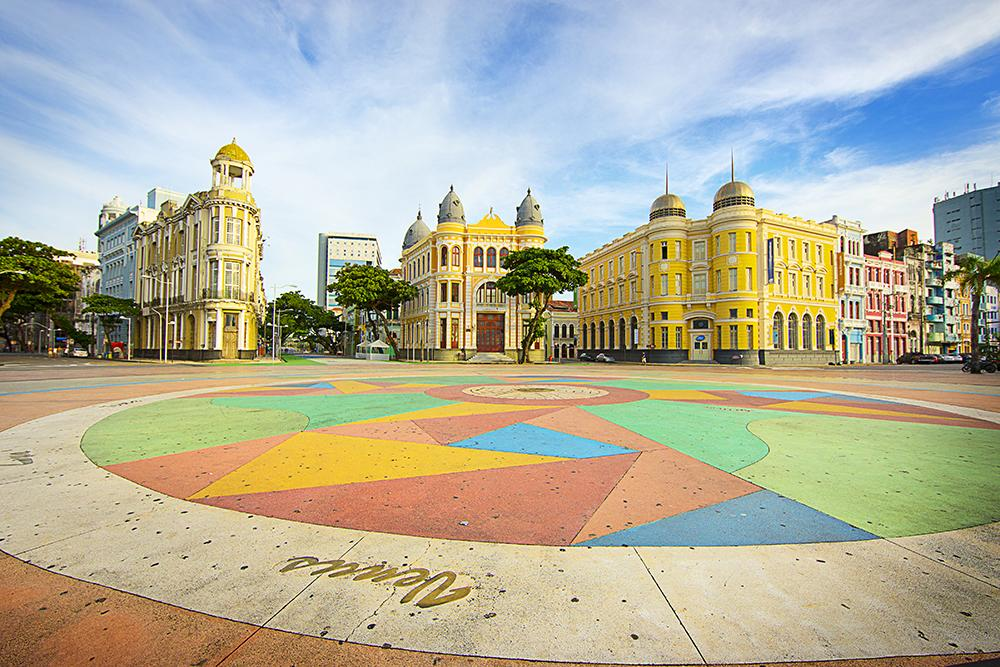
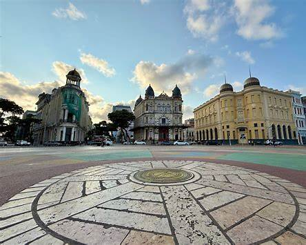
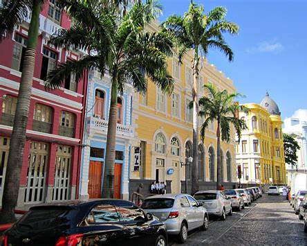
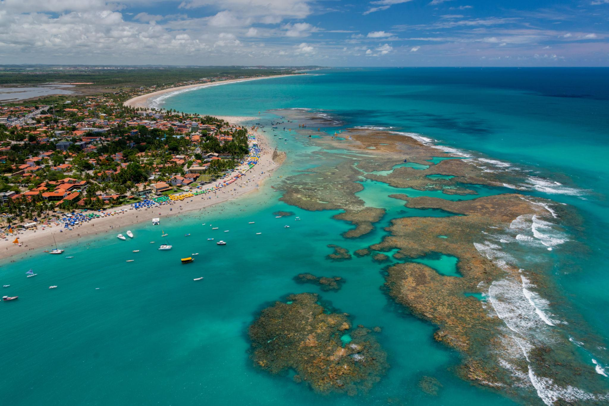

⚓
História portuária
Recife cresceu profundamente ligado ao porto e às rotas econômicas do período colonial.
Portos, pontes, ladeiras, ritmos e mar. Nesta rota, a viagem começa no Recife e segue por algumas das paisagens mais conhecidas do estado.

PARADA 01 / 05O Marco Zero é um dos principais pontos de referência turística do Recife. A região ajuda a entender a ligação histórica entre a cidade e seu porto, que já tinha importância desde o século XVI.

PARADA 02 / 05O bairro histórico reúne arquitetura, equipamentos culturais e espaços públicos próximos ao porto. No século XVII, Recife viveu um período de domínio holandês, uma fase que deixou marcas importantes na história urbana da região.

PARADA 03 / 05Recife é conhecido por uma cena cultural marcada por ritmos e manifestações populares. Frevo, maracatu, caboclinho, forró, ciranda e coco de roda aparecem na programação e na identidade cultural da cidade.

PARADA 04 / 05Olinda reúne casario colonial, igrejas, monumentos, ateliês e forte vida cultural. Seu sítio histórico é Patrimônio Cultural da Humanidade desde 1982 e pode ser percorrido a pé, entre ladeiras e ruas de pedra.

PARADA 05 / 05Depois de tanta história, a rota termina no litoral. Porto de Galinhas é uma das paisagens turísticas mais conhecidas de Pernambuco, marcada por águas tropicais, recifes e forte presença do turismo costeiro.
Recife cresceu profundamente ligado ao porto e às rotas econômicas do período colonial.
Ritmos e festas transformam ruas e praças em espaços de memória e criação coletiva.
O turismo de praia convive com cidades históricas, gastronomia e vida cultural intensa.
Do Recife a Porto de Galinhas, a rota mostrou como história, cultura e paisagem se encontram em um mesmo estado.
A Prefeitura do Recife explica que os arrecifes naturais ajudaram a formar um porto de escoamento de riquezas desde o século XVI. Antes de ser cidade, Recife já era ponto de circulação de navios e mercadorias.
Além do frevo, o Recife reúne maracatu, caboclinho, forró, ciranda e coco de roda — manifestações que ajudam a formar sua identidade cultural.
A origem do povoado está ligada à chegada de Duarte Coelho à Capitania de Pernambuco, em 1535. A posição elevada ajudava na defesa e dava vista para o mar.